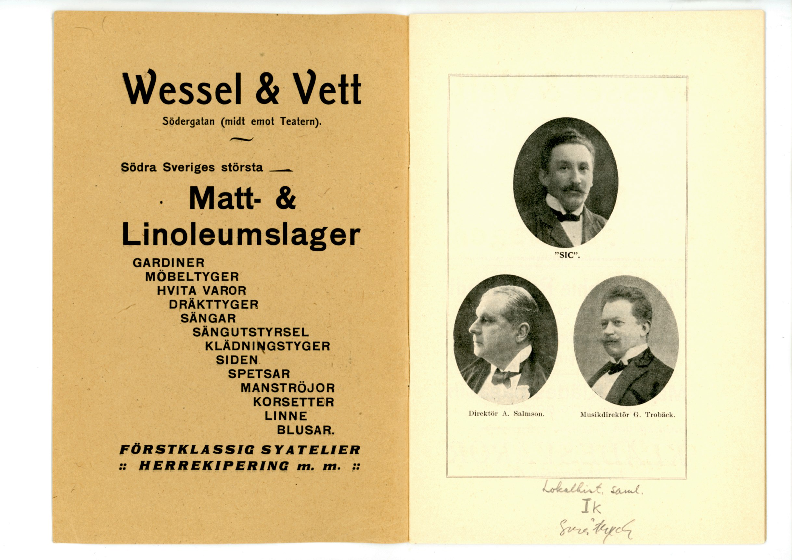
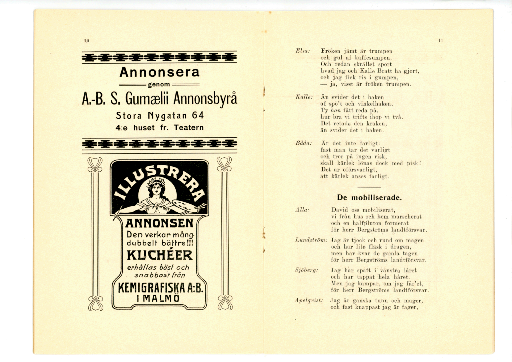

Urval bland kupletterna
DRICK SOLO-KAFFE
Malmö Stadsbibliotek
Malmö samlingen
Södergatan (midt emot Teatern)
FÖRSTKLASSIG SYATELIER
HERREKIPERING m. m.

⟨Lokalhist. Saml. Småtryck⟩
Paris 1900. Helsingborg 1903. Trade W Mark Helsingborg 1903. London 1901.
ÄKTA
Caloric Punsch
Gustav Wolke – Malmö
skånska [...] AKT BOL 2724[?]
S. Förstadsgatan 25. Rikstel. 1188.
Eleganta fotografier o. förstoringar
i alla prislägen
(Förest. OTTO MODÉER)
Svenska och Engelska
KLÄDESVAROR
13, Södergatan 13.
(Lejonhjärta och Cæsar)
(Kalle och Elsa)
Annonsera
genom
A.-B. S. Gumælii Annonsbyrå
Stora Nygatan 64
4:e huset fr. Teatern

ILLUSTRERA
ANNONSEN
Den verkar mång-
dubbelt bättre!!!
KLICHÉER
erhålls bäst och snabbast från
KEMIGRAFISKA A:B.
I MALMÖ